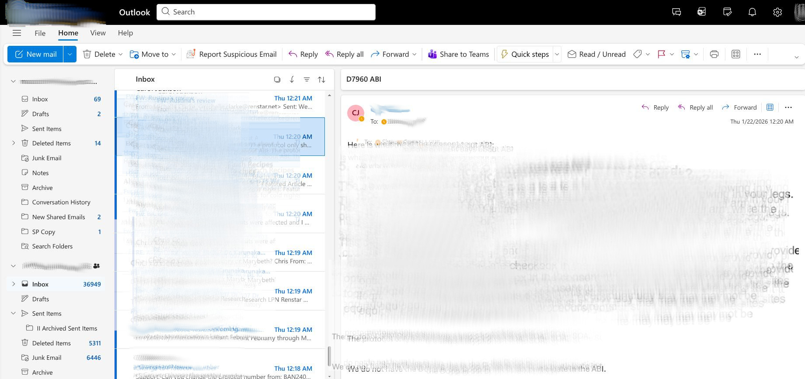
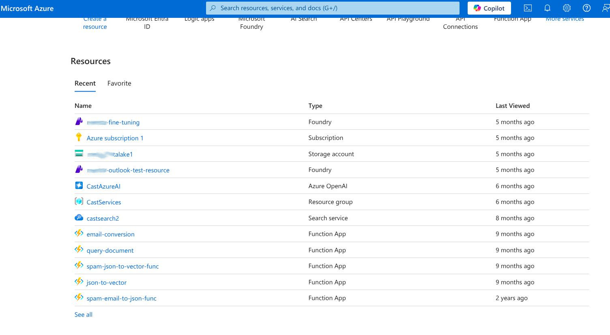
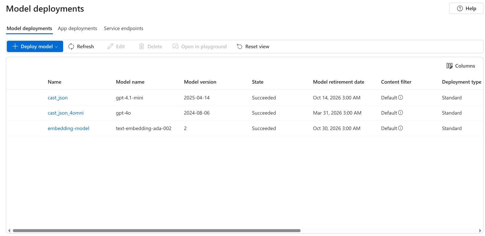

Email Ingestion & Normalization

Live Outlook integration showing high-volume executive inbox with 69+ messages requiring intelligent processing and prioritization
Integrated deeply with Microsoft Outlook to pull messages with full thread context, metadata, and
attachment handling for comprehensive email understanding.
Data Sources:
Sender, subject, body, attachments, thread context, timestamps, folder metadata
Normalization:
Parsing layer converts emails to clean JSON objects (signature stripping, thread-safe formatting)
Volume Handling:
Deployed across 12 executive inboxes processing thousands of messages daily
Azure Microservices Architecture

Azure cloud infrastructure showing deployed resources: AI Foundry, Function Apps, Search services, and Storage accounts
Implemented multiple Azure Function Apps as modular microservices to separate responsibilities and
maintain a clean, scalable pipeline architecture.
email-conversion:
Message → structured JSON transformation service
spam-email-to-json-func:
Spam detection and filtering preprocessing pipeline
json-to-vector:
Embedding generation and vector indexing for semantic search
query-document:
Retrieval + response assembly orchestration endpoint
Deployment Pattern:
Lightweight HTTP endpoints callable by automation tools, Outlook actions, internal dashboards
Backend Processing & Query Function

Azure Function App Python code showing query processing logic with user input parsing and LLM result formatting
Built Python-based Azure Functions to handle email parsing, user query extraction, and result
formatting with robust error handling and logging.
Framework:
Azure Functions with Python runtime for serverless execution
Request Handling:
HTTP-triggered functions parsing JSON requests with subject, from, body fields
Processing Logic:
Query extraction, context assembly, LLM invocation, structured response formatting
Error Management:
Exception handling with graceful degradation and detailed logging for debugging
Custom Model & Executive Drafting Engine

Azure AI Foundry model deployments: GPT-4.1-mini, GPT-4o, and text-embedding-ada-002 for chat and semantic search
Deployed multiple Azure OpenAI models optimized for different tasks: lightweight chat for drafting,
embeddings for semantic retrieval, with custom prompt engineering for executive tone and compliance.
Chat Models:
GPT-4.1-mini (cast_json), GPT-4o (cast_json_4omni) for response generation and reasoning
Embedding Model:
text-embedding-ada-002 for semantic search over email archives
RAG Workflow:
Build embeddings from historical messages → Query relevant context → Generate draft with executive tone
Output Structure:
Draft reply, decision clarity, compliant structure, routing recommendations
Semantic Search & Knowledge Retrieval
Implemented vector-enabled search infrastructure to retrieve relevant context from historical
email archives using semantic similarity rather than keyword matching.
Vector Storage:
Azure AI Search (castsearch2) with vector search capabilities
Indexed Content:
Email threads, reply patterns, internal terminology, routing history
Query Endpoints:
Similar thread context, matching prior replies, routing action patterns
Context Assembly:
Strict token budgeting with relevancy scoring for optimal LLM input
Spam Filtering & Prioritization Logic
Built a multi-layer classification system to categorize emails by urgency and business value while
avoiding false positives on critical communications.
Classification:
Spam / low priority / actionable / urgent categories
Safety Controls:
Confidence thresholds and rules to prevent filtering business-critical messages
Priority Signals:
Sender reputation, subject keywords, thread importance, attachment types
Human-in-the-Loop Learning System
Implemented a feedback mechanism that captures executive edits and decisions to continuously
improve the quality of draft responses and routing recommendations.
Captured Signals:
Draft edits (diff-based learning), send vs. discard decisions, routing overrides
Feedback Loop:
Signals fed back into prompt/model tuning workflow for iterative improvement
Adaptation:
System learns executive preferences, routing patterns, tone adjustments over time